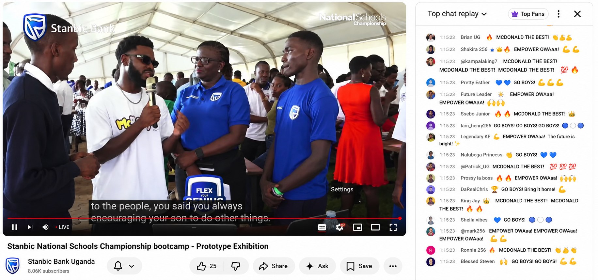

A leader who builds things — and builds people.
McDonald Trinity is a young, sharp-minded entrepreneur out of Kampala with a rare combination of technical vision and genuine people leadership.
As Founder and CEO of Emtrixz Technology, Trinity has spent years turning ideas into working software — custom systems, mobile and web apps, and digital tools for real businesses — while quietly doing something more important: bringing teenagers and young Ugandans into the room, teaching them to code, ship, and lead.
That instinct for leadership didn't start in a boardroom. A product of Empower International Academy, Trinity earned it as a national finalist at the Stanbic National Schools Championship, where discipline, composure under pressure, and building something real as a team mattered as much as individual skill. Those same qualities now define how he runs Emtrixz — steady, focused, and always thinking about the next person coming up behind him.
A note on the record: the Stanbic National Schools Championship is often assumed to be a sports tournament because of the word "Championship." It isn't. It's Uganda's flagship school-level innovation and entrepreneurship programme, run by Stanbic Bank Uganda since 2015 — students build prototypes and business ideas, not sports plays. Read the full story →
How he got here.
Empower International Academy
Where his leadership journey started — building the foundation of discipline and ambition he carries into Emtrixz today.
Stanbic National Schools Championship
Competed as a national icon in Uganda's flagship school innovation and entrepreneurship programme — developing a real prototype with a team, defending it in front of judges and mentors, and presenting it at the programme's national bootcamp prototype showcase, filmed and published on Stanbic Bank Uganda's YouTube channel.
Emtrixz Technology
Founded Emtrixz Technology in Kampala around a simple idea: give young people real problems to solve, and they'll rise to meet them. Under his leadership, the studio grew from an idea into a working team shipping software for real clients.
Mentoring the next generation
Leads a team of young Ugandan developers, mentors teens entering software development for the first time, and champions client-focused, reliable, on-time delivery as a studio standard.

What the Championship actually taught him.
- Identified a real community problem and built a working prototype with a student team
- Learned to perform under pressure and defend an idea in front of judges and mentors
- Carried a team-first, build-something-real mindset that now shapes how he runs Emtrixz
- Proof that discipline built in a national innovation programme translates directly to leadership in tech
"Whether it's a team on the court or a team of developers, leadership is the same thing — show up, stay disciplined, and make everyone around you better." — McDonald Trinity